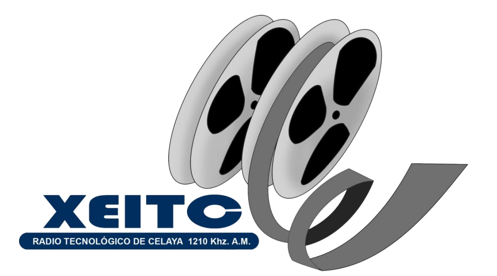

avisos
INFORME DEL ESTADO DE LAS OBRAS EN EL ITC
Convocatoria a profesores: 55 Logros Linces
/*parte de admision 1*/
admision
/*parte de imagen*/

/*parte de texto*/
Información para los aspirantes que desean formarse profesionalmente en nuestra Institución.
/*parte de calendario 1.5*/
calendario
/*parte de imagen*/

/*parte de texto*/
Consulta eventos y fechas oficiales.
/*parte profesores 2*/
profesores
Obtén información sobre formación y actualización docente y profesional así como enlaces a (SII) (SG)
/*parte de alumnos 2.5*/
alumnos
Obtén información sobre becas, servicio social, actividades extra escolares.
/*parte radio tecnologico 3*/
Radio tecnologico

Escucha XEITC radio tecnológico de Celaya.
/*parte centro de idiomas 3.5*/
Centro de idiomas
Conoce todo sobre los cursos de idiomas, fechas, exámenes internacionales, eventos, etc.
/*parte Centro de información 4*/
Centro de información
Consulta en línea el catálogo del acervo bibliográfico, nuestro reglamento, relación de adquisiciones y más..
/*parte Galeria de imagenes 4.5*/
Galeria de imagenes
Conoce las instalaciones y las actividades que se realizan dentro y fuera del tecnológico.
/*parte radio tecnologico 5*/
Personal
Obtén información sobre, convocatorias, fechas e información relacionada con recursos humanos.
/*parte centro de idiomas 5.5*/
Centro de computo
Obtén información sobre, reglamento, instalaciones y servicios que ofrece.
/*parte centro de idiomas 6*/
Acceso a Medios de Verificación PNPC-CONACYT
En este enlace se encuentran los accesos a los medios de verificación de los programas que se encuentran en evaluación.